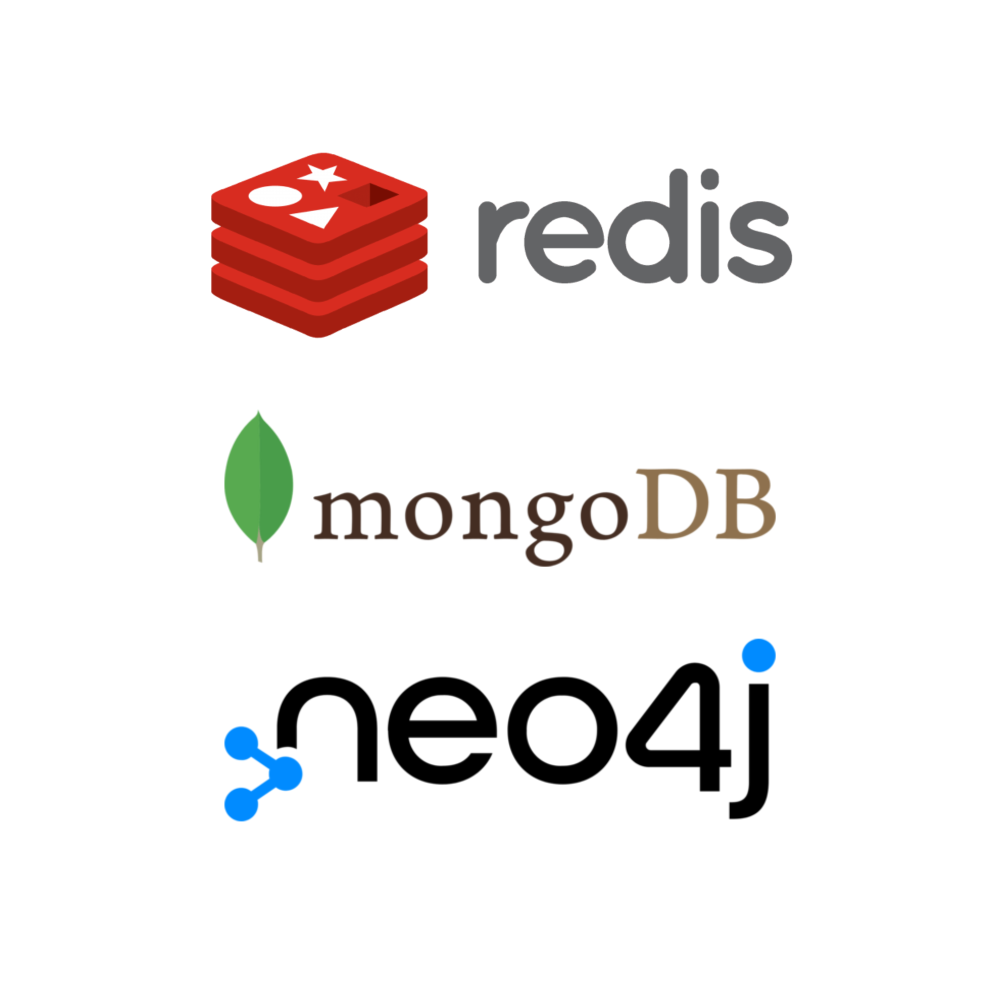

Herramientas


👋Hola! Soy estudiante de Ciencia de Datos en Organizaciones en la Universidad Nacional de La Plata (UNLP).
Apasionado por transformar datos complejos en soluciones estratégicas. Cuento con una sólida base matemática y
experiencia académica en el ciclo de vida del dato: desde la extracción y limpieza (ETL) hasta el modelado y visualización.
Busco aplicar mis habilidades en Python, SQL, NoSQL y Power BI para generar valor real y continuar mi desarrollo profesional en un equipo dinámico.
Por ultimo quisiera aclarar que disfruto de los desafíos que me permiten crecer profesional y personalmente.
EPH con Python y Streamlit
Cartera de inversiones con Google Sheets
Web Scraping y Analisis de Datos
Dashboard de Análisis Comercial - BMW

TravelData NoSQL: Integración Multimodelo con MongoDB, Redis y Neo4j
Utilización de la EPH para Limpieza y Visualización de Datos:
Utilicé Python para la limpieza y visualización de la EPH (Encuesta Permanente de Hogares) y mostré los resultados de una forma interactiva usando Streamlit.
Objetivo: Aplicar mis conocimientos y estudios para crear de forma práctica y simple indicadores demográficos mediante objetos gráficos.


Utilización de Google Sheets y Google Finance para crear un portfolio:
Usé herramientas como Google Sheets y Google Finance para crear una plantilla que permitiera tener un control de un portfolio de inversiones.
Objetivo: Generar una plantilla que ayude a las personas a controlar sus activos financieros, obteniendo datos pasados y presentes, gastos, ingresos, promedios y rentabilidad, bajo un modelo FIFO (primero entrado - primero salido).


Web Scraping y Análisis de Datos:
Creé un script en Python que permite realizar web scraping de títulos en diferentes páginas web de medios de noticias en Argentina y los almacena en SQLite. Luego, utilizando Streamlit, se ejecuta una limpieza de los datos y se representan gráficamente.
Agregué una funcionalidad "automatizada" para poder descargar un archivo .pdf con los datos generados y su respectivo Análisis.


Dashboard de Análisis Comercial - BMW:
Creé un dashboard interactivo utilizando Power BI para analizar datos de ventas de BMW por año, modelos, tipo de combustible, region, etc.
El mismo incluye tarjetas, graficos, ToolTip´s Personalizados, Imagenes por filtro (donde cree archivos con cada una de las imagenes y las incorporé mediante medidas DAX) y otras herramientas visuales que me permitieron realizar el proyecto.
Por ultimo quiero destacar que se realizó a lo largo del proyecto todo el ciclo ETL (dentro de Power BI) ,y la creación estética y visual del dashboard.


TravelData NoSQL: Integración Multimodelo con MongoDB, Redis y Neo4j:
Este proyecto, desarrollado en la materia "Bases de Datos" en la UNLP, consistió en el diseño e implementación de un ecosistema de datos multimodelo para una plataforma ficticia de gestión de viajes. El desafío central fue garantizar la coherencia de los datos al distribuir la información en tres tecnologías distintas, utilizando Python como lenguaje integrador para realizar cargas masivas y manipulaciones complejas.
La arquitectura se dividió estratégicamente según la naturaleza de la información:
MongoDB (Documental): Utilizada para almacenar el núcleo de la aplicación, incluyendo perfiles de usuario, destinos turísticos con sus actividades, información de hoteles e historial de reservas confirmadas. Elegida por su flexibilidad para manejar esquemas no uniformes y su estructura orientada a documentos que se asemeja a los objetos de Python.
Redis (Clave-Valor): Implementada para gestionar datos de baja latencia en memoria RAM. Se utilizó para el almacenamiento de la caché de búsquedas, el registro de usuarios conectados mediante estructuras de Sets y la gestión de reservas temporales con tiempos de vida (TTL) definidos para limpieza automática.
Neo4j (Grafos): El motor principal para el sistema de recomendaciones. Utilicé el lenguaje Cypher para modelar y consultar relaciones entre usuarios (amistades) y sus interacciones con los destinos (visitas). Esto permitió resolver problemas complejos, como sugerir destinos que ni el usuario ni su círculo cercano han visitado aún.
Mediante el desarrollo de pipelines en Jupyter Notebooks, automaticé la ingesta masiva de datos y creé un módulo de consultas avanzadas que demuestra la interoperabilidad entre motores. Logré realizar procesos críticos como la eliminación sincronizada de usuarios en múltiples bases de datos y el análisis estadístico de los destinos más visitados.